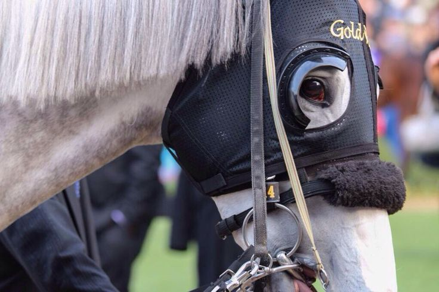
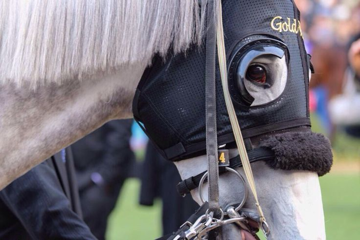

There are not a lot of good backpacks for 17-inch laptops. I've been searching for a few hours now and found a pretty solid bag. The "TIGERNU T-B3905" has loads of pockets, enough to contain all the folders I'll be buying. There's also an option to link your power bank to it so you can charge your phone while using it, with an earphone hole for you to use wired earphones rather than Bluetooth ones. Another cool feature is a zipper that can expand the bag to make it even bigger for more storage. I'm a little worried I won't be able to put my pins on the bag, but I'll cross that bridge when I get there.
Still, I'm hoping it lasts long for the rest of college. I don't want to have to buy a new bag because it got wrecked in a year, you could argue that I "just need to take care of it". Which I will, but I'm hoping the material is strong enough that I don't have to fuss over it every few seconds.
──────────────────
My favorite race horse is "Gold Ship"; he's so silly. I will not lie, I discovered him when a game called "Umamusume: Pretty Derby" was gaining popularity when it was released globally. He has 13 wins in 28 races, and I've been watching clips of him in retirement, and it's so cute. He stays on a farm in Hokkaido, Japan. He's the prettiest horse I've ever seen, his body is pure white, and his nose is a cute pink. The way he wins is breathtaking; he starts slow, then blasts off, hurtling to first place and the finish line. I was and still am so amused by the fact that his unpredictable personality is the only predictable thing about him. He could be so uncontrollable that he could almost be disqualified as a racehorse.
I love him even more after learning about the “12 billion yen incident” during the 2015 Takarazuka Kinen. What happened was he won that race 2 times already, so bettors were confident that he would win again.
Bettors lost an estimated 12 billion yen.
He earned nearly 1.4 billion yen during his time as a racehorse, and experts suggest these earnings could have been higher if he consistently chose to compete seriously.
Oh and he kicks anyone he doesn't like.
 
